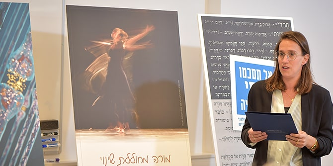

צילום: נוה בן שמואל
צילום: נוה בן שמואל
אחד התוצרים שעליהם עמלים עמיתי שנה ב' במסגרת תוכנית הלימודים האישית בבית הספר הוא פוסטר המציג את תחום העניין באופן ויזואלי ומתומצת. הפוסטר הוא סופו של תהליך עבודה על זיקוק תחום העניין, הבהרת עיקריו ועיקרי הערכים שמבקשים לקדם. הוא מספק לעמיתים הזדמנות להתנסות בתרגום מלל לשפה ויזואלית וחושף את תחומי העניין שלהם לפני קהילת מנדל הרחבה כדי להפכה לשותפה פעילה במהלך שנת לימודיהם השנייה ואחריה.
הפוסטרים הוצגו לפני חברי סגל בית הספר וקרן מנדל-ישראל, עמיתי מחזור ל' והמנחים האישיים של העמיתים. במהלך העבודה על אירוע ההצגה, אשר תוכנן על-ידי העמיתים, עלו שלוש תמות מרכזיות, המשתקפות מתוך תחומי העניין של העמיתים: המעשה החינוכי – זהות וערכים; נשות ואנשי החינוך – אנושיות וצמיחה; ומנופים להובלת שינוי חברתי. לאחר הצגות קצרות התקיים שיח אישי עם המציגים סביב כל אחד מהאתגרים שעליהם הצביעו העמיתים בהצגותיהם. גם השומעים נטלו על עצמם תפקיד במהלך ההצגה, שיתפו במחשבותיהם וברעיונות שלהם לעתיד, וחשבו על תחומי העניין מתוך עיניהם של מעצבי מדיניות, מיישמי מדיניות וקהל היעד של המדיניות, כמו גם מנקודת מבט תאורטית ומעשית.

צילום: נוה בן שמואל
דני בר גיורא, מנהל בית ספר מנדל למנהיגות חינוכית, בירך את עמיתות ועמיתי מחזור כ"ט על הצגת הפוסטרים שלהם והסביר את חשיבותה של הצהרת כוונות זו: "זוהי הצהרת כוונות על הדבר שבו תרצו להעמיק ועליו תרצו להשפיע בעולם אל מול קהילת בית הספר הרחבה. כמו כן, זהו גם תרגיל נפלא במעבר לשפה ויזואלית, אמנות התמצות ודיוק המלל".
ד"ר נטע שר-הדר, חברת סגל בית הספר שהובילה את תהליך הפוסטרים בסיועו של רכז הלמידה הדיגיטלית של בית הספר, גילי שטרן, דיברה על תהליך העבודה החשוב שעברו העמיתים לקראת הצגת הפוסטרים. בתהליך נכללו שותפים רבים לחשיבה והתייעצות, הן לפני הן אחרי הצגת הפוסטרים, והוא ביקש להעמיק את למידת העמיתים בתחומי העניין שלהם ובאופני יישום אפשריים לרעיונותיהם. "כל הכרזה וכל כרזה מבטאות עולם ערכי מלא וכיוון פעולה, לפחות התחלתי", אמרה שר-הדר.
{kind=link}
{kind=link}